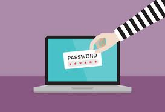

لا يكاد يكون هناك حد لما يمكنك القيام به عبر الإنترنت. يجعل الإنترنت من الممكن الوصول إلى المعلومات بسرعة، والتواصل مع الناس حول العالم، وأكثر من ذلك بكثير. لكن، للأسف، الإنترنت أيضاً يحتوي على بعض المخاطر مثل البرمجيات الضارة، والبريد المزعج (السبام)، والتصيد الاحتيالي. إذا أردت أن تبقى آمناً على الإنترنت، فستحتاج إلى فهم هذه المخاطر وتعلم كيفية تجنبها.
غالباً ما تعطي الحواسيب إحساسًا خاطئًا بالأمان. في النهاية، لا يمكن لأحد أن يؤذيك جسديًا عبر شاشة الحاسوب. لكن لكي تبقى آمناً على الإنترنت، يجب أن تتبنى نهجًا أكثر حذرًا. إليك طريقة للتفكير في الأمر: عامل الإنترنت كما تعامل مركز التسوق.
معظم الناس لا يعتبرون مركز التسوق مكانًا خطيرًا جدًا. يمكنك الذهاب إليه للتسوق واللقاء مع الأصدقاء. لكن هناك أشياء بسيطة تقوم بها لتبقى آمنًا، حتى وإن لم تفكر بها كثيرًا. على سبيل المثال، من المحتمل ألا تترك سيارتك غير مقفلة أو تعطي رقم بطاقتك الائتمانية لشخص غريب.
طبق نفس العقلية هذه عندما تكون على الإنترنت. لا يجب أن تخاف من استخدام الإنترنت، لكن تذكر أنه يحمل العديد من المخاطر نفسها التي قد تواجهها في العالم الحقيقي. خلال هذا الدرس، سنوضح لك كيف تستعد لهذه المخاطر حتى تتمكن من التواجد على الإنترنت دون تعريض نفسك للخطر.
ستحتاج إلى إنشاء كلمة مرور للقيام بكل شيء تقريبًا على الويب، من التحقق من بريدك الإلكتروني إلى الخدمات المصرفية عبر الإنترنت. وبينما يكون من الأسهل استخدام كلمة مرور قصيرة وسهلة التذكر، إلا أن ذلك قد يشكل مخاطر كبيرة على أمانك على الإنترنت. لحماية نفسك ومعلوماتك، ستحتاج إلى استخدام كلمات مرور طويلة وقوية وصعبة التخمين من قبل الآخرين، مع الحفاظ على سهولة نسبية لتذكرها بالنسبة لك.
قد تتساءل الآن، لماذا أحتاج إلى كلمة مرور قوية على أي حال؟ الحقيقة هي أنه رغم أن معظم المواقع الإلكترونية تكون آمنة، إلا أن هناك دائمًا احتمالًا بسيطًا أن يحاول شخص ما الوصول إلى معلوماتك أو سرقتها. يُعرف هذا عادةً باسم الاختراق (الهاكينج). وتعد كلمة المرور القوية واحدة من أفضل الطرق لحماية حساباتك ومعلوماتك الشخصية من القراصنة.
كلمة المرور القوية هي التي تكون سهلة عليك لتتذكرها، لكنها صعبة على الآخرين لتخمينها. دعونا نلقي نظرة على بعض أهم الأمور التي يجب مراعاتها عند إنشاء كلمة مرور.